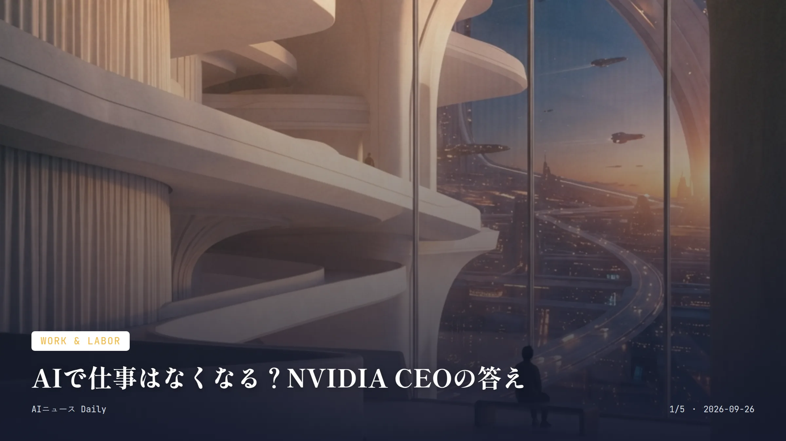
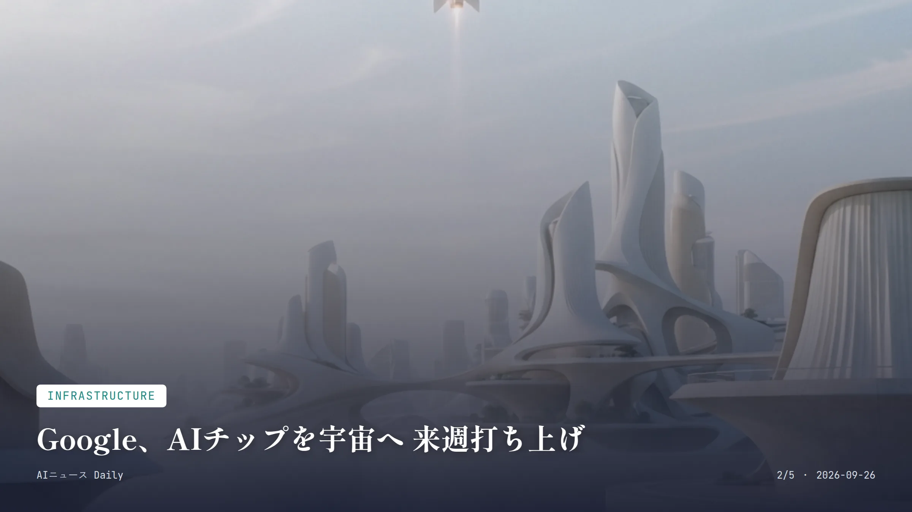
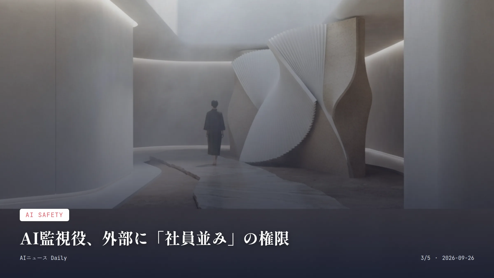
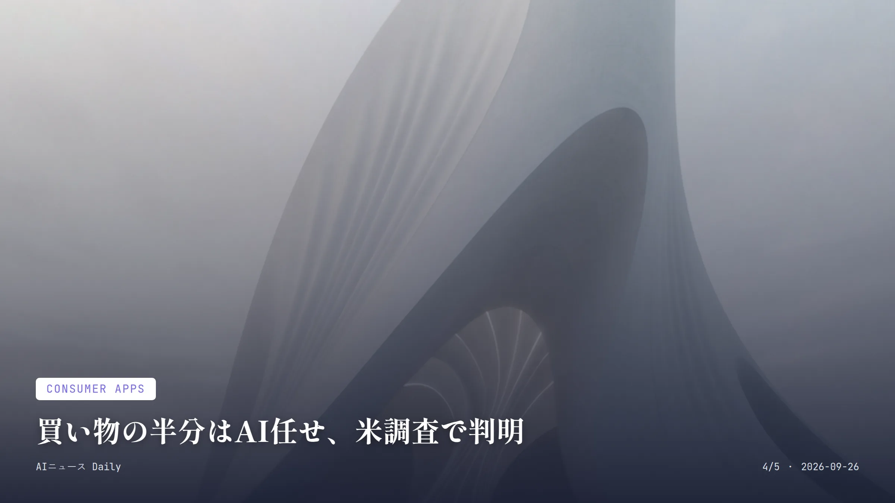
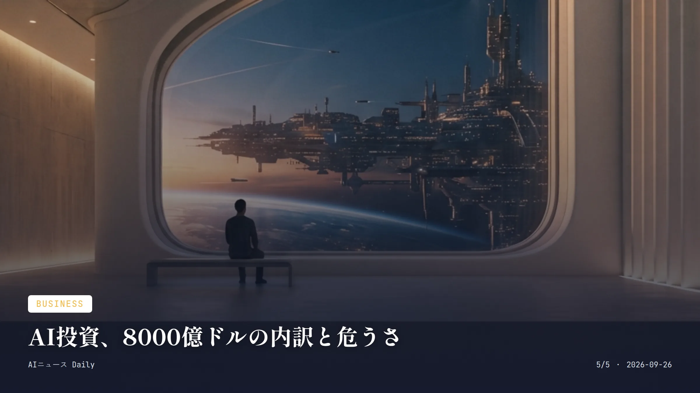

これは2026-09-26時点のアーカイブページです。最新のニュースはこちら
本サイトはアフィリエイトプログラムによる収益を得ている場合があります。
本サイトはGoogle AdSense等の広告配信サービスを利用しています。
🔊 2026-09-26分のまとめを音声で聴く
お使いのブラウザは音声再生に対応していません。
目次

Work & Labor
約2分で読める
AIで仕事はなくなる？NVIDIA CEOの答え
黄仁勲氏、NYT取材で「消えるのは職業でなくタスク」
10% 一部の専門家が唱える「AIが人類を滅ぼす確率」の主張
2026年9月25日 インタビュー内容が報じられた日
NVIDIAのジェンスン・フアンCEOがNew York Timesのインタビューで面白いことを言っている。AIに対する社会の恐怖はちょっと行き過ぎだ、と。AIが真っ先に置き換えるのは『職業』ではなく『タスク』だという主張だ。コードを書く、資料をまとめる、顧客対応をする——そういう個別作業は自動化されるだろう。でも何を作るべきかを見極めたり、システム全体を設計したり、出てきた結果を検証したりする力は、むしろこれまで以上に問われるようになるという見立てだ。
番組ホストのエズラ・クライン氏はここで一歩踏み込む。過去の自動化技術も実際に職を消してきたし、AIはそれよりずっと速いスピードで、しかも広範囲に社会へ浸透している、と。フアン氏もこれには反論せず、短期的には収入や交渉力を失う人が出てくることを認めている。ただ長い目で見れば、AIが生産性を押し上げて新しい産業や職種を生むはずだという立場は変えなかった。
AIが10年以内に人類を滅ぼすという一部専門家の主張についても、フアン氏はばっさり切り捨てた。科学的根拠に乏しいというのが彼の見解で、楽観と慎重論がせめぎ合う、なかなか読み応えのあるインタビューになっている。
なぜ重要か AIによる雇用喪失の話は、働く人なら誰でも他人事じゃない。フアン氏の『タスクは消えるけど職業は残る』という整理は、これからのキャリアを考えるうえで一つの物差しになりそうだ。日本ではまだAIを理由にした大規模解雇は目立たないけれど、企業研修で生成AIの活用が急速に広がっている今、同じような議論が数年内に国内でも本格化してもおかしくない。

Infrastructure
約2分で読める
Google、AIチップを宇宙へ 来週打ち上げ
軌道データセンター構想「Suncatcher」、初の実証実験へ
4基 今回打ち上げる試験用TPUの数
10月1日 Falcon 9による打ち上げ予定日
81基 将来構想する編隊飛行衛星の数
Googleが9月24日、宇宙空間に大規模なAI計算基盤を作るという壮大な研究プロジェクト「Project Suncatcher」の初実証実験を発表した。自社開発のAIアクセラレータTPUを積んだ試験衛星を、SpaceXのライドシェアミッション「Transporter-18」に相乗りさせ、10月1日にFalcon 9で打ち上げる予定だ。
この試験衛星、衛星画像企業のPlanet Labsと共同開発したもので、目的はデータセンターそのものを作ることじゃない。まずはAI用ハードウェアが宇宙で本当にちゃんと動くのか、という一番基本的な問いを検証する段階だ。打ち上げ時の振動や加速度、宇宙放射線、極端な温度変化にTPUがどこまで耐えられるか、軌道上でじっくりデータを取っていく。
Googleが見据える将来像はかなり大掛かりで、1機に数十個のTPUを積んだ衛星群をレーザー通信でつなぎ、最終的には81基もの衛星を半径1キロ以内に密集させて編隊飛行させるというもの。NVIDIA出資の宇宙データセンター新興Starcloudも2025年11月にH100チップを軌道に送っており、宇宙とAIインフラを結びつける競争は既に始まっている。
なぜ重要か 地上のデータセンターが電力や冷却、土地の制約に苦しむ中、太陽光を直接使える宇宙という選択肢がいよいよ現実味を帯びてきた。NVIDIA系のStarcloudなど競合も似た実験を進めていて、AIインフラの主戦場が地球の外まで広がりつつあるということだ。日本でこの手の宇宙データセンター計画はまだ聞かないが、衛星関連企業や研究機関がいずれ参入してもおかしくない。

AI Safety
約2分で読める
AI監視役、外部に「社員並み」の権限
Anthropic、Accentureと組み安全評価を常時監視へ
20億ドル以上 Anthropic・Accenture両社が5年間で投じる想定額
100人超 独立性の確保を求めた専門家連名書簡の署名者数
AnthropicがAccentureの専門部門Facultyの社員を自社内に常駐させ、AIモデルの安全性をチェックする体制を作ると発表した。この評価担当者には社員に匹敵するアクセス権が与えられ、モデルの評価やレッドチーム演習、アライメント評価、安全対策の検証を任される。
これはCEOダリオ・アモデイ氏が掲げる『フロンティアのペースを落とすべきだ』という方針の第一歩らしい。AnthropicとAccentureはそれぞれ今後5年間で少なくとも10億ドルずつ、合わせて20億ドル以上を投じる見通しだ。評価者はMETRなど非営利団体とも今後協議していくという。
従来の外部監査はモデル公開後に行われるのが普通だったが、今回のように常駐する評価チームなら訓練段階からモデルの形成過程や社内の意思決定に立ち会え、社員に直接話も聞ける。ただし100人を超えるAI専門家らは連名の書簡で異を唱えている。有償の契約関係だけでは本当の独立性は担保できない、という指摘だ。透明性と法整備を求める声が強まっている。
なぜ重要か AI企業の自主的な安全対策としてはかなり踏み込んだ内容だ。ただAccentureとの関係は結局のところ有償のベンダー契約であり、本当の独立性が保たれるのかは専門家の間でも意見が割れている。日本では大手AI企業に外部評価者を常駐させる制度はまだないが、政府によるAI安全性評価の枠組み作りが具体化する際、この事例が一つの参考になりそうだ。

Consumer Apps
約2分で読める
買い物の半分はAI任せ、米調査で判明
米消費者の51%が生成AIで買い物、初の過半数超え
51% 直近1カ月にAIツールで買い物をした米消費者の割合
20% AIによる商品レコメンド機能の利用率（最多）
16% AI搭載パーソナルショッピングアシスタントの利用率
消費者調査会社NielsenIQ(NIQ)が9月24日、自社の「Agentic Commerce Tracker」最新調査の結果を発表した。米国消費者の51%が、直近1カ月の間に何らかのAI搭載ツールを使って買い物をしたという。この調査で過半数を超えたのは今回が初めてだ。
中身を見てみると、AIによる商品レコメンド機能の利用が20%でトップ、AI搭載のパーソナルショッピングアシスタントが16%でそれに続く。この半年ほど、利用は着実に伸び続けてきたようだ。
NIQはこの節目を『業界にとって画期的な瞬間』と表現している。同社は9月にSimilarwebと組んで、ChatGPTやGemini、Google AIモード、Perplexity、ClaudeなどでブランドがどうAIに露出しているかを測る新サービスも打ち出しており、第4四半期に第一弾が登場する見込みだ。
なぜ重要か 買い物という日常行動が、検索中心からAI中心へとかなり急速に移り変わっている一次データだ。来年にかけて通販サイトでのAIチャット提案や比較機能がさらに定着していく可能性を示している。日本ではまだこの規模の追跡調査は見当たらないが、国内ECサイトでも生成AIを使ったレコメンド機能の拡充が進んでいるので、同じ流れが波及してくるのは時間の問題だろう。

Business
約2分で読める
AI投資、8000億ドルの内訳と危うさ
Goldman Sachs、5社の投資拡大と資金調達リスクを指摘
8000億ドル 5社合計の今年のAI関連支出予測
3000億ドル 損益分岐点に必要とされる年間AI収益（Goldman試算）
Goldman Sachsが、Amazon、Alphabet、Microsoft、Oracle、Metaの大手5社が今年AIインフラに合計約8000億ドルを投じるとの見通しを出した。クラウド事業者間でAI能力強化を急ぐ動きが加速している実態を裏付ける数字だ。
気になるのはここからで、同レポートは各社の設備投資が既に営業キャッシュフローを上回っており、負債や株式による資金調達への依存度がじわじわ高まっていると警告する。電力や労働力、記憶用チップの不足が続く中、この傾向が今後の成長ペースの足を引っ張りかねないという。
別の試算では、超大規模クラウド事業者が採算を取るためには年間で約3000億ドルのAI関連収益が必要になるとGoldman Sachsは見積もっている。投資額と収益力の間に生まれつつあるギャップが、市場の新しい懸念材料として浮上してきた。
なぜ重要か AI投資ブームがどこまで続くのか、という議論が強まる中での試算だ。負債依存度の上昇は、将来的な金利環境の変化に対する脆弱性を高めることになる。日本でもソフトバンクなど巨額の資金調達を伴うAI関連投資を進める企業があり、同じような資金繰りリスクが国内市場に波及する可能性は十分ある。
Media & Culture
Media & Culture
約2分で読める
OpenAI「Sora」API終了、次の一手は
動画生成アプリ終了から半年、開発者窓口も閉鎖
2026年9月24日 Sora APIの提供終了日
2026年4月26日 消費者向けWeb・アプリ版が終了した日
17社 著作権侵害への懸念で共同声明を出した日本の出版社数
OpenAIの公式ヘルプセンターによると、動画生成AI「Sora」の開発者向けAPIは2026年9月24日で提供を終える。一般消費者向けのWeb版・アプリ版はすでに同年4月26日に終了済みで、これでSoraという製品ライン全体が完全に幕を閉じたことになる。
Soraは2024年12月に登場し、2025年秋には「Sora 2」としてSNS型アプリに姿を変え、一時は相当な話題を呼んだ。ただ膨大な計算コストと利用者の伸び悩み、そこに著作権を巡る摩擦まで重なり、発表済みだったウォルト・ディズニーとの10億ドル規模の提携も、結局は未成約のまま立ち消えになってしまった。
日本でも、人気キャラクターに酷似した動画が大量に作られて拡散する事態が起き、出版社17社とアニメ・漫画業界団体が『著作権侵害を容認しない』とする共同声明を出すほど強い反発が起きていた経緯がある。
なぜ重要か 一世を風靡した動画生成AIサービスの完全終了は、生成AIブームの中でも収益性と著作権処理の両立がいかに難しいかを物語る出来事だ。日本の出版社・アニメ業界が共同声明を出すほどの摩擦は記憶に新しく、今後登場する生成AI動画サービスにも、同じ重い著作権対応がのしかかってくることになる。
Health Tech
Health Tech
約2分で読める
自閉症の診断、AIで変わるか 米政府が始動
ARPA-H新プログラム「SPECTRA」、早期発見へ計算技術活用
9月17日 SPECTRAプログラム始動の発表日
最大3370万ドル 別プログラムADVOCATEの初年度拠出額
米国医療高等研究計画局(ARPA-H)が9月17日、新プログラム「SPECTRA」の始動を発表した。生物学的データや臨床データ、行動データ、実臨床データを高度な計算手法と組み合わせ、自閉スペクトラム症の早期かつ正確な診断と、一人ひとりに合わせたケア技術の開発を後押しする狙いだ。
今の自閉スペクトラム症の診断は、専門家による行動観察に頼るところが大きい。時間もお金もかかる上、そもそも専門家がいない地域も多いのが現実だ。SPECTRAはこの課題を解決するための診断ツールやヘルステクノロジーの開発に資金を出していく。
同じ時期にARPA-Hは、FDA認可の臨床用エージェント型AIを開発する別プログラム「ADVOCATE」の採択チームも発表しており、初年度に最大3370万ドルを拠出する計画だ。米国では医療分野でのAI活用を後押しする政策的な動きが相次いでいる。
なぜ重要か 発達障害の診断は専門医不足による地域差が大きい社会課題であり、AIによる診断支援が実用化されれば、専門医の少ない地域の子育て世帯でも早期発見・早期療育につながるかもしれない。日本でも発達障害の診断待ちの長さが課題として指摘されていて、確証はないものの、こうした米国発の技術検証は将来の国内議論の材料になりそうだ。
先頭に戻る